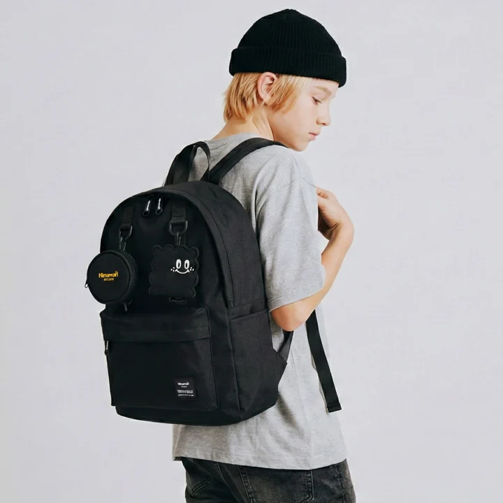

내 백팩을 설명할 기록, 전체 사진과 현재의 특징

검은 백팩이라는 설명은 비슷한 물건을 많이 떠올리게 합니다. 모델 번호를 알고 있어도 현재 달아둔 장식이나 사용 흔적은 상품 사진과 다를 수 있습니다. 평소 쓰는 상태를 개인 기록으로 남겨두면 필요한 순간에 가방을 설명할 단서가 생깁니다. 외부에 개인정보를 크게 표시하기보다 자신이 다시 찾아볼 수 있는 사진과 메모를 준비하는 방식부터 생각해 봅니다.
전체를 보는 앞면과 뒷면 사진
밝고 단순한 배경에서 가방 전체가 나오도록 앞면을 찍습니다. 손잡이나 끈이 잘리지 않는지 보고, 현재 달아둔 소품이 있다면 함께 담습니다. 제품을 새것처럼 정돈한 사진만 만들기보다 실제로 쓰는 상태를 읽을 수 있게 남깁니다. 반사되거나 그림자가 짙어 일부를 알아보기 어려우면 다른 각도로 다시 볼 수 있습니다. 사진을 찍기 위해 가방 속 개인 소지품까지 공개할 필요는 없습니다.
뒷면 사진에는 어깨끈과 현재의 연결 구성이 보이도록 둡니다. 앞면만 보면 비슷해도 뒤쪽 상태나 추가 부품이 다를 수 있습니다. 사진을 찍은 날짜를 기록해두면 이후 장식을 바꾸거나 부품을 분리했을 때 갱신할 기준이 됩니다. 앞뒤 사진은 같은 날의 가방을 말하도록 묶고, 오래된 사진을 현재 사진과 섞어 문의 자료를 만들지 않습니다.
구별되는 특징과 구매 정보
세 번째 사진은 자신이 알아볼 수 있는 특징을 가까이 담습니다. 현재의 작은 자국이나 탈착 가능한 장식, 안쪽 표시가 그 단서가 될 수 있습니다. 일부러 원단을 손상시키거나 새로운 구멍을 만들 이유는 없습니다. 특징을 메모할 때에는 어디에 있는지 위치를 함께 씁니다. ‘작은 자국’보다 ‘앞면 아래쪽의 자국’처럼 전체 사진에서 찾아갈 수 있으면 설명하기 쉽습니다.
분리하기 쉬운 장식만을 유일한 특징으로 삼기보다 현재 외형과 함께 기록합니다. 장식을 바꾸거나 떼었다면 사진과 메모도 갱신합니다. 특징이 없다고 일부러 눈에 띄는 개인정보를 달기보다 모델과 옵션, 앞뒤 모양을 묶어 남길 수 있습니다. 자국을 자세히 보여주려고 이미지를 과도하게 수정하면 실제 형태와 달라질 수 있으므로 알아볼 수 있는 원래 모습을 유지합니다.
Himawari No.0422를 사용한다면 제품 정보는 모델을 찾는 참고로, 개인 사진은 지금 쓰는 가방을 설명하는 자료로 둘 수 있습니다. 주문 기록에서 선택한 색상과 옵션을 읽고 현재 사진과 연결합니다. 같은 모델의 다른 색을 보고 자신의 옵션을 추측하지 않습니다. 구매 화면과 실제 물건이 어떤 관계인지 메모에 남으면 문의할 때 필요한 설명을 고르기 쉽습니다.

구매 자료에는 주문 번호나 주소, 결제 정보가 포함될 수 있습니다. 개인 기록으로 보관할 범위와 밖으로 전달할 범위를 나눕니다. 모델과 색상을 확인하려고 화면 전체를 그대로 공개할 필요는 없습니다. 소유 확인을 위해 어떤 자료가 필요한지는 실제 접수 기관의 안내를 따릅니다. 사진이 있다는 사실만으로 정해진 확인 절차를 대신한다고 판단하지 않고 담당자가 요구하는 항목을 기준으로 준비합니다.
실제로 잃어버렸을 때 적을 경로
마지막으로 가방을 확인한 장소와 시간을 기록합니다. 확실한 순간과 추정하는 순간을 구별합니다. 이후 방문한 시설이나 이용한 교통수단을 순서대로 정리하고 공식 분실물 안내를 찾아볼 수 있습니다. 장소가 여러 개라면 확인한 곳과 아직 문의하지 않은 곳을 표시합니다. 기억이 흐린 시간을 정확한 숫자로 채우기보다 확인할 자료가 무엇인지 남겨두면 경로를 대조하기 쉽습니다.
문의할 때에는 현재 외형을 설명하고 필요하다고 안내받은 자료를 전달합니다. 공개 게시판에 가방 속 귀중품이나 개인 정보를 모두 나열하기보다 접수 기관의 확인 절차를 따릅니다. 전체 사진으로 설명할 수 있는 부분과 비공개로 전달할 특징을 나누어 준비할 수 있습니다. 여러 곳에 문의했다면 어디에서 어떤 답을 받았는지 개인 기록으로 남겨 확인을 중복하지 않게 합니다.
가방을 설명할 때 사진의 어느 면을 말하는지 함께 붙입니다. 앞면 자국을 말하면서 뒷면 사진만 보내면 담당자가 위치를 찾기 어렵습니다. 추가 질문이 오면 원래 사진과 현재 메모에서 해당 부분을 골라 답할 수 있습니다. 확실하지 않은 내용은 기억으로 늘리지 않고 모르는 항목으로 남깁니다. 소유 확인 방식이나 반환 조건은 해당 기관이 안내하는 범위에서 진행합니다.
사용 상태가 달라졌다면 기록도 바꾼다
키링을 바꾸거나 수선을 받았다면 달라진 부분을 사진에 반영합니다. 오래된 상태를 완전히 삭제하기보다 날짜를 나누어 보관하면 현재 사진을 찾기 쉽습니다. 여러 가방을 쓰는 경우에는 모델과 개인 사진의 이름을 맞추고 어느 것이 현재 사용하는 것인지 구분합니다. 비슷한 옵션을 가진 가방이 가족에게도 있다면 각자의 실제 특징을 따로 기록해둘 수 있습니다.
개인 기록은 가방을 찾는 보조 자료로 사용할 수 있고 평소 관리 문의에도 현재 상태를 설명할 수 있습니다. 기록을 만드는 날에는 앞뒤 전체 모습과 특징, 모델과 옵션이 한 묶음인지 확인합니다. 다음에 바뀐 부분이 생겼을 때 필요한 사진만 갱신하면 됩니다. 같은 단어로 가방을 설명해야 하는 순간에도 자신이 알아볼 현재의 물건이 기록 안에 남습니다.